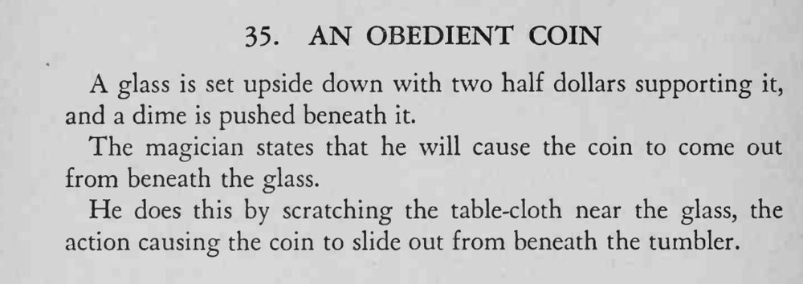

玻璃杯倒扣，由两枚半美元垫起，一角硬币塞在杯下。魔术师只说了一声，在杯旁的桌布上刮了刮，硬币便自己滑了出来。
刮桌布时手指要贴着布面用力，靠布纹的移动把硬币带出来。

A glass is set upside down with two half dollars supporting it, and a dime is pushed beneath it. The magician states that he will cause the coin to come out from beneath the glass. He does this by scratching the table-cloth near the glass, the action causing the coin to slide out from beneath the tumbler.